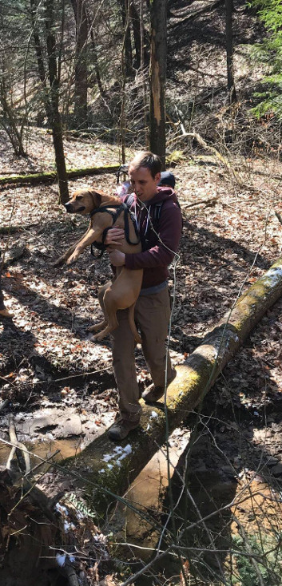

My research group develops program analyses and software systems that make complex, concurrent software significantly more reliable, scalable, and secure than it is today.
If you're an Ohio State CSE graduate student interested in working with me on programming languages and software systems, please stop by my office or send me an e-mail.
General interests: programming languages, software and hardware systems, program analysis, compilers, security
Spring 2020: CSE 6341
Autumn 2019
Major recent/upcoming activities:
Rui Zhang's paper on Peacenik: architecture support for not failing under fail-stop memory consisitency will appear at ASPLOS 2020!
Jake Roemer defended his PhD thesis in April and graduated in August 2019! He's seeking industry and industrial research jobs.
Kanan Genc's paper on dependence-aware predictive race detection appeared at OOPSLA 2019!
Swarnendu Biswas's paper on ARC: rethinking support for region conflict exceptions appeared at IPDPS 2019!
|  |
|